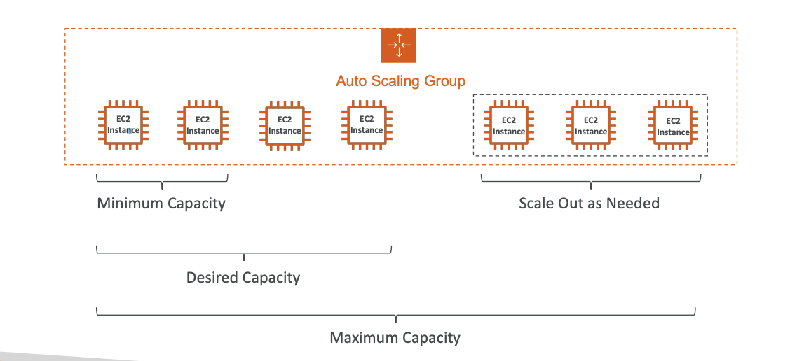

03. ELB and ASG
ELASTIC LOAD BALANCER
- Why use a load balancer?
- Spread load across multiple downstream instances
- Expose a single point of access (DNS) to your application
- Seamlessly handle failures of downstream instances
- Do regular health checks to your instances
- Provide SSL termination (HTTPS) for your websites
- Enforce stickiness with cookies
- High availability across zones
-
Separate public traffic from private traffic
-
Why use an Elastic Load Balancer?
- An Elastic Load Balancer is a managed load balancer
- AWS guarantees that it will be working
- AWS takes care of upgrades, maintenance, high availability
- AWS provides only a few configuration knobs
- It costs less to setup your own load balancer but it will be a lot more effort on your end
- It is integrated with many AWS offerings / services
- EC2, EC2 Auto Scaling Groups, Amazon ECS
- AWS Certificate Manager (ACM), CloudWatch
-
Route 53, AWS WAF, AWS Global Accelerator
-
Health Checks
- Health Checks are crucial for Load Balancers
- They enable the load balancer to know if instances it forwards traffic to are available to reply to requests
- The health check is done on a port and a route (/health is common)
-
If the response is not 200 (OK), then the instance is unhealthy
-
Types of load balancer on AWS
- AWS has 4 kinds of managed Load Balancers
- Classic Load Balancer (v1 - old generation) – 2009 – CLB
- HTTP, HTTPS, TCP, SSL (secure TCP)
- Supports TCP (Layer 4), HTTP & HTTPS (Layer 7)
- Health checks are TCP or HTTP based
- Fixed hostname XXX.region.elb.amazonaws.com
- Application Load Balancer (v2 - new generation) – 2016 – ALB
- HTTP, HTTPS, WebSocket
- Load balancing to multiple HTTP applications across machines (target groups)
- Load balancing to multiple applications on the same machine (ex: containers)
- Support for HTTP/2 and WebSocket
- Support redirects (from HTTP to HTTPS for example)
- Routing tables to different target groups:
- Routing based on path in URL (example.com/users & example.com/posts)
- Routing based on hostname in URL (one.example.com & other.example.com)
- Routing based on Query String, Headers (example.com/users?id=123&order=false)
- ALB are a great fit for micro services & container-based application (example: Docker & Amazon ECS)
- Has a port mapping feature to redirect to a dynamic port in ECS
- In comparison, we’d need multiple Classic Load Balancer per application
- Target Groups
- EC2 instances (can be managed by an Auto Scaling Group) – HTTP
- ECS tasks (managed by ECS itself) – HTTP
- Lambda functions – HTTP request is translated into a JSON event
- IP Addresses – must be private IPs
- ALB can route to multiple target groups
- Health checks are at the target group leve
- Network Load Balancer (v2 - new generation) – 2017 – NLB
- TCP, TLS (secure TCP), UDP
- Network load balancers (Layer 4) allow to:
- Forward TCP & UDP traffic to your instances
- Handle millions of request per seconds
- Less latency ~100 ms (vs 400 ms for ALB)
- NLB has one static IP per AZ, and supports assigning Elastic IP (helpful for whitelisting specific IP)
- NLB are used for extreme performance, TCP or UDP traffic
- Not included in the AWS free tier
- Network Load Balancer –Target Groups
- EC2 instances
- IP Addresses – must be private IPs
- Application Load Balancer (thanks to NLB you get fixed Ips and thanks tou ALB you get all rules and features)
- Health Checks support the TCP, HTTP and HTTPS Protocols
- Gateway Load Balancer – 2020 – GWLB
- Operates at layer 3 (Network layer) – IP Protocol
- https://synechron.udemy.com/course/aws-certified-solutions-architect-associate-saa-c03/learn/lecture/28874688#overview
- Deploy, scale, and manage a fleet of 3rd party network virtual appliances in AWS
- Example: Firewalls, Intrusion Detection and Prevention Systems, Deep Packet Inspection Systems, payload manipulation, …
- Operates at Layer 3 (Network Layer) – IP Packets
- Combines the following functions:
- Transparent Network Gateway – single entry/exit for all traffic
- Load Balancer – distributes traffic to your virtual appliances
- Uses the GENEVE protocol on port 6081
- Gateway Load Balancer –Target Groups
- EC2 instances
- IP Addresses – must be private IPs
- Overall, it is recommended to use the newer generation load balancers as they provide more features
-
Some load balancers can be setup as internal (private) or external (public) ELBs
-
Sticky Sessions (Session Affinity)
- It is possible to implement stickiness so that the same client is always redirected to the same instance behind a load balancer
- This works for Classic Load Balancer, Application Load Balancer, and Network Load Balancer
- For both CLB & ALB, the “cookie” used for stickiness has an expiration date you control
- Use case: make sure the user doesn’t lose his session data
-
Enabling stickiness may bring imbalance to the load over the backend EC2 instances
-
Sticky Sessions – Cookie Names This is configured inside target group(attributes)
-
Application-based Cookies
- Custom cookie
- Generated by the target
- Can include any custom attributes required by the application
- Cookie name must be specified individually for each target group
- Don’t use AWSALB, AWSALBAPP, or AWSALBTG (reserved for use by the ELB)
- Application cookie
- Generated by the load balancer
- Cookie name is AWSALBAPP
- Duration-based Cookies
- Cookie generated by the load balancer
- Cookie name is AWSALB for ALB, AWSELB for CLB
- Custom cookie
-
Cross-Zone Load Balancing
- With Cross Zone Load Balancing: each load balancer instance distributes evenly across all registered instances in all AZ
- Without Cross Zone Load Balancing: Requests are distributed in the instances of the node of the Elastic Load Balancer

It is configured on the ELB itself, attributes section
- Application Load Balancer
- Enabled by default (can be disabled at the Target Group level)
- No charges for inter AZ data
- Network Load Balancer & Gateway Load Balancer
- Disabled by default
- You pay charges ($) for inter AZ data if enabled
- Classic Load Balancer
- Disabled by default
- No charges for inter AZ data if enabled
-
Load Balancer - SSL Certificates
-
The load balancer uses an X.509 certificate (SSL/TLS server certificate)
- You can manage certificates using ACM (AWS Certificate Manager)
- You can create upload your own certificates alternatively
-
HTTPS listener:
- You must specify a default certificate
- You can add an optional list of certs to support multiple domains
- Clients can use SNI (Server Name Indication) to specify the hostname they reach
- Ability to specify a security policy to support older versions of SSL / TLS (legacy clients)
-
SSL – Server Name Indication (SNI)

- SNI solves the problem of loading multiple SSL certificates onto one web server (to serve multiple websites)
- It’s a “newer” protocol, and requires the client to indicate the hostname of the target server in the initial SSL handshake
- The server will then find the correct certificate, or return the default one
Note: - Only works for ALB & NLB (newer generation), CloudFront - Does not work for CLB (older gen)
-
Elastic Load Balancers – SSL Certificates
-
Classic Load Balancer (v1)
- Support only one SSL certificate
- Must use multiple CLB for multiple hostname with multiple SSL certificates
- Application Load Balancer (v2)
- Supports multiple listeners with multiple SSL certificates
- Uses Server Name Indication (SNI) to make it work
-
Network Load Balancer (v2)
- Supports multiple listeners with multiple SSL certificates
- Uses Server Name Indication (SNI) to make it work
-
Connection Draining
- Feature naming
- Connection Draining – for CLB
- Deregistration Delay – for ALB & NLB
- Time to complete “in-flight requests” while the instance is de-registering or unhealthy
- Stops sending new requests to the EC2 instance which is de-registering
- Between 1 to 3600 seconds (default: 300 seconds)
- Can be disabled (set value to 0)
- Set to a low value if your requests are short
AUTO SCALING GROUP
- What’s an Auto Scaling Group?
- In real-life, the load on your websites and application can change
-
In the cloud, you can create and get rid of servers very quickly
-
The goal of an Auto Scaling Group (ASG) is to:
- Scale out (add EC2 instances) to match an increased load
- Scale in (remove EC2 instances) to match a decreased load
- Ensure we have a minimum and a maximum number of EC2 instances running
- Automatically register new instances to a load balancer
- Re-create an EC2 instance in case a previous one is terminated (ex: if unhealthy)
-
ASG are free (you only pay for the underlying EC2 instances) 
-
Auto Scaling Group Attributes
- A Launch Template (older “Launch Configurations” are deprecated)
- AMI + Instance Type
- EC2 User Data
- EBS Volumes
- Security Groups
- SSH Key Pair
- IAM Roles for your EC2 Instances
- Network + Subnets Information
- Load Balancer Information
- Min Size / Max Size / Initial Capacity
-
Scaling Policies
-
Auto Scaling - CloudWatch Alarms & Scaling
- It is possible to scale an ASG based on CloudWatch alarms
- An alarm monitors a metric (such as Average CPU, or a custom metric)
- Metrics such as Average CPU are computed for the overall ASG instances
-
Based on the alarm:
- We can create scale-out policies (increase the number of instances)
- We can create scale-in policies (decrease the number of instances)
-
Auto Scaling Groups – Scaling Policies
-
Dynamic Scaling
- Target Tracking Scaling
- Simple to set-up
- Example: I want the average ASG CPU to stay at around 40%
- Simple / Step Scaling
- When a CloudWatch alarm is triggered (example CPU > 70%), then add 2 units
- When a CloudWatch alarm is triggered (example CPU < 30%), then remove 1
- Scheduled Scaling
- Anticipate a scaling based on known usage patterns
- Example: increase the min capacity to 10 at 5 pm on Fridays
- Predictive scaling: continuously forecast load and schedule scaling ahead
- Target Tracking Scaling
-
Good metrics to scale on
- CPUUtilization: Average CPU utilization across your instances
- RequestCountPerTarget: to make sure the number of requests per EC2 instances is stable
- Average Network In / Out (if you’re application is network bound)
-
Any custom metric (that you push using CloudWatch)
-
Auto Scaling Groups - Scaling Cooldowns
- After a scaling activity happens, you are in the cooldown period (default 300 seconds)
- During the cooldown period, the ASG will not launch or terminate additional instances (to allow for metrics to stabilize)
- Advice: Use a ready-to-use AMI to reduce configuration time in order to be serving request fasters and reduce the cooldown period